여기는 정답이 전시되는 곳이 아닙니다.
아직 이름 붙지 않은 경험이 시작되는 곳입니다.
02 THE ATLAS / EXPLORE
열여섯 개의 문.
각 작품은 서로 다른 질문에서 출발합니다. 마음이 끌리는 방향으로 입장하세요.
 EXPEDITION / 01LIVING PARTICLES
EXPEDITION / 01LIVING PARTICLES
AETHER
생명의 언어
빛 입자들이 숨 쉬고 꽃피는 3차원 생명. 손짓으로 호흡·개화·궤도를 바꿉니다.
세계로 입장 EXPEDITION / 02EVOLVING LIFE
EXPEDITION / 02EVOLVING LIFE
ANIMA
살아있는 페이지
신경망을 가진 가상 개체들이 서로 반응하며 실시간으로 진화하는 생태계입니다.
세계로 입장 EXPEDITION / 03ATLAS OF THE UNIMAGINED
EXPEDITION / 03ATLAS OF THE UNIMAGINED
ANOMALIA
상상력 바깥의 지도
사건의 안쪽에서 네 번째 방향까지. 다섯 세계를 건너 숨겨진 여섯 번째 세계를 해금합니다.
세계로 입장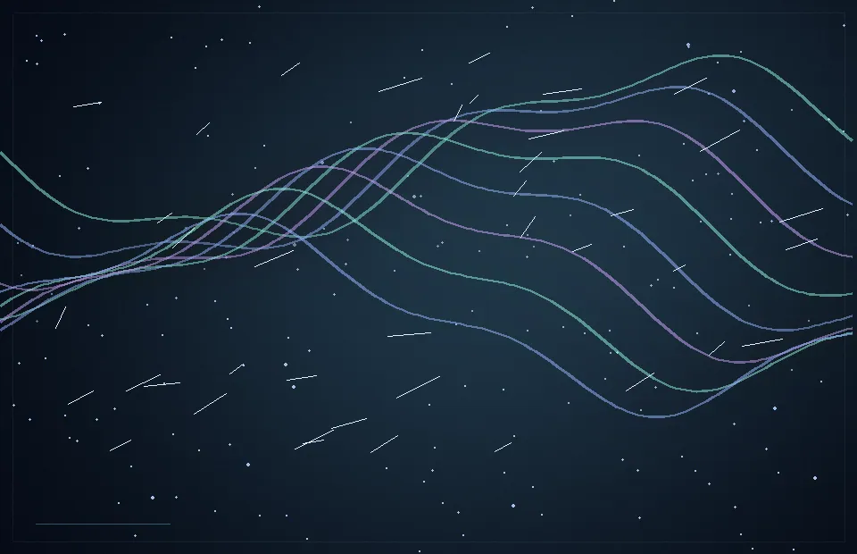
EXPEDITION / 04THE PERSISTENT SKYAURORAMIND
당신이라는 우주
움직임으로 만들어진 별들이 남아 있는 개인 우주. 다시 돌아와도 별자리를 기억합니다.
세계로 입장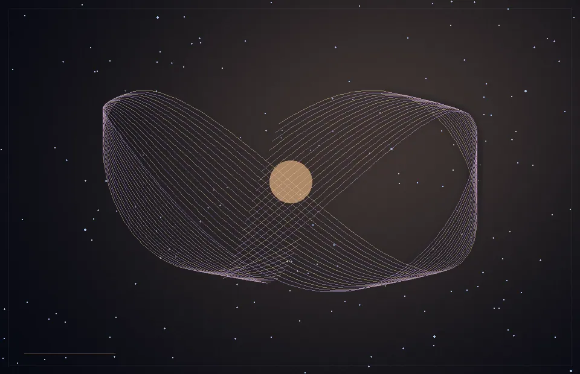
EXPEDITION / 05FIVE LENSES OF IDEASBEYOND
가능성의 틈
반전·삭제·증폭·결합·미래의 다섯 렌즈로 정답의 바깥에서 새로운 질문을 만듭니다.
세계로 입장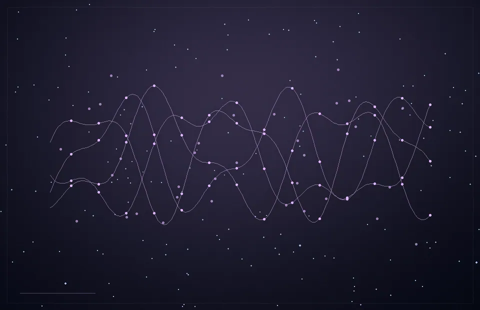
EXPEDITION / 06TRACES THAT REMAINENGRAM
관찰자의 귀환
20초 동안의 움직임이 별자리가 됩니다. 남긴 단어와 함께 기억 보관소에 담아봅니다.
세계로 입장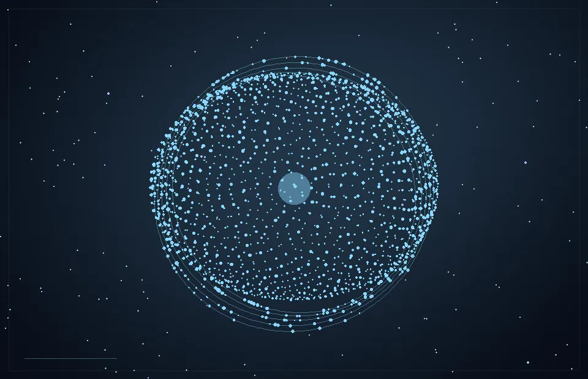
EXPEDITION / 07THOUGHT INTO MATTERMINDSCAPE
상상력의 경계 너머
1,600개의 입자가 글자와 구체 사이를 오가며 움직임과 충격파에 반응합니다.
세계로 입장 EXPEDITION / 08A UNIVERSE OF NAMES
EXPEDITION / 08A UNIVERSE OF NAMES
NAMES
이름의 우주
이름 하나를 씨앗으로 별자리를 탄생시키고, 그 우주의 시간을 직접 움직입니다.
세계로 입장 EXPEDITION / 09A GARDEN OF STARFLOWERS
EXPEDITION / 09A GARDEN OF STARFLOWERS
NOCTURNE
별의 정원
어둠 속에 별꽃을 심고, 꽃마다 깃든 시를 읽는 당신만의 작은 정원입니다.
세계로 입장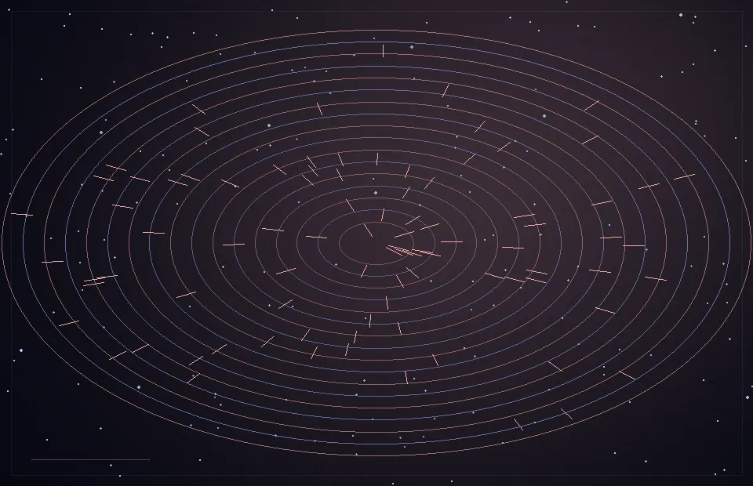
EXPEDITION / 10BEYOND PERCEPTIONTHE OUTSIDE
인지의 바깥
원환·접힘·기억·프랙털·지평선의 세계를 건너 여섯 번째 관측자 차원을 엽니다.
세계로 입장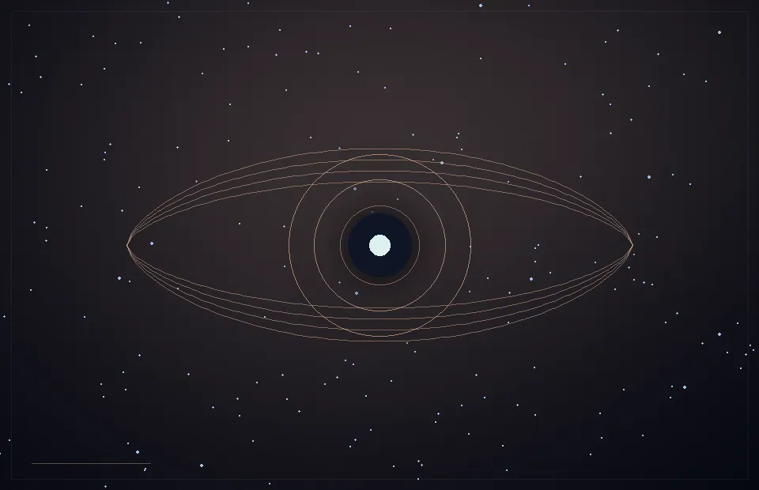
EXPEDITION / 11WHO IS WATCHING WHOMSOMEONE
당신을 보고 있는 웹사이트
움직임에 깨어나는 미지의 존재. 약 60초 뒤에 누가 누구를 보고 있었는지 드러납니다.
세계로 입장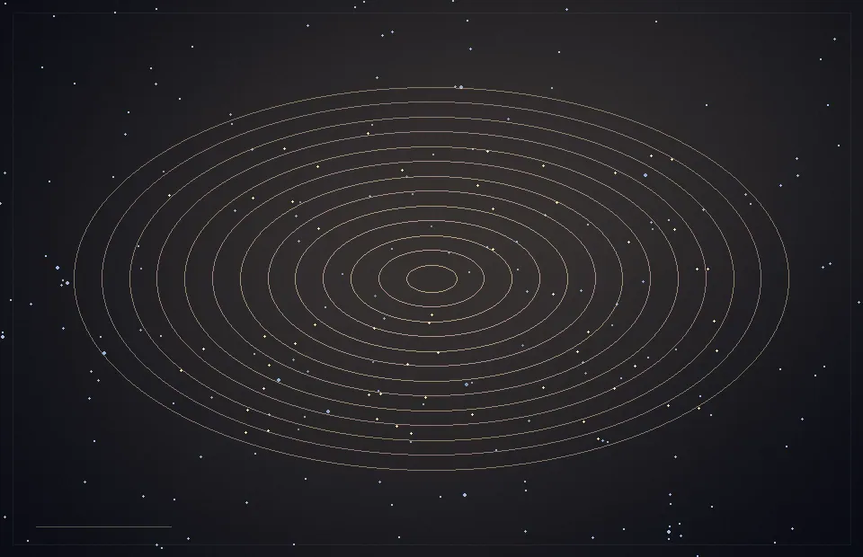
EXPEDITION / 12A ROOM FOR BREATHINGSUM
숨
빛의 흐름에 손을 얹고, 한 번 숨을 고르며 공간의 색을 바꾸는 고요한 방입니다.
세계로 입장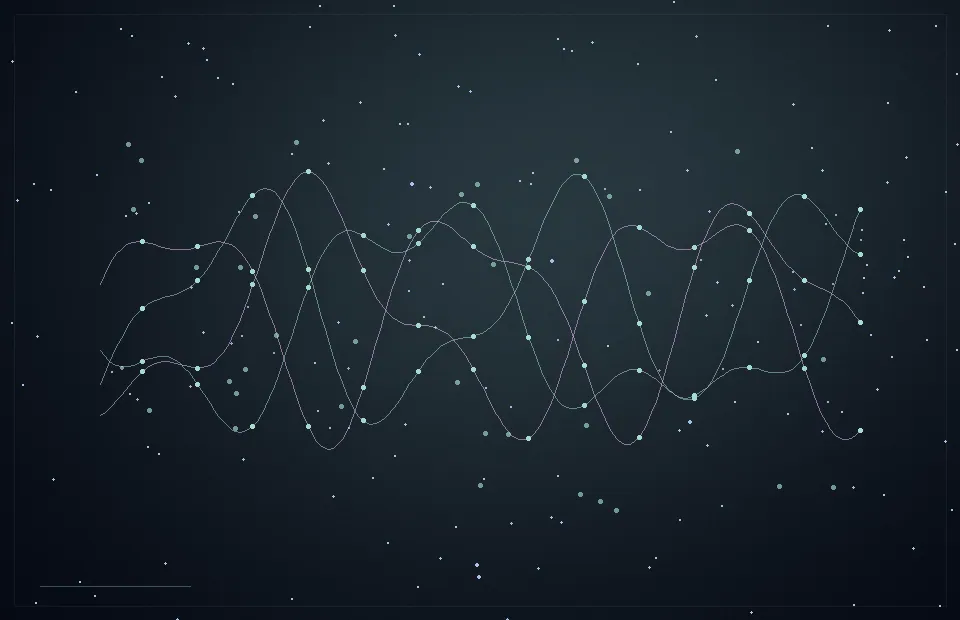
EXPEDITION / 13AN ARTISTIC PORTRAITTHE SITE THAT KNOWS YOU
당신을 닮은 별자리
움직임과 멈춤을 시각적인 별자리 초상화로 완성합니다. 성격 검사가 아닌 예술 경험입니다.
세계로 입장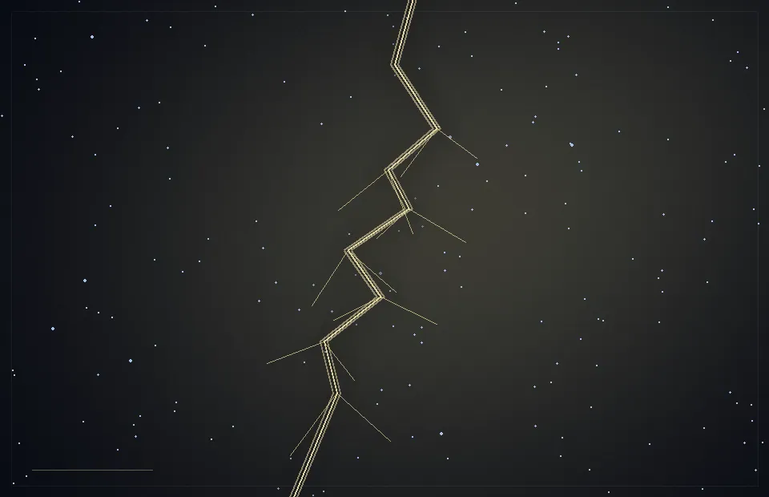
EXPEDITION / 14CROSS THE INVISIBLE WALLTHE THRESHOLD
뚫는 자의 기록
스크롤로 벽에 균열을 내고 빛을 쏟아내며 여섯 장면의 경계를 통과합니다.
세계로 입장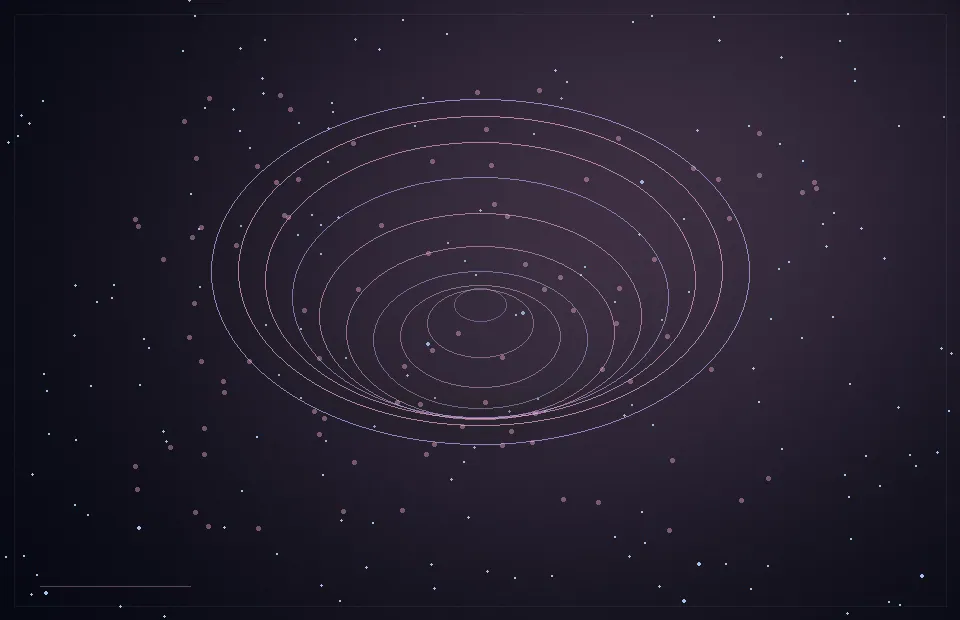
EXPEDITION / 15EMOTIONS YET UNNAMEDUNFELT
감정의 바깥
거리·무게·흔적·시간을 선택해 아직 존재하지 않던 감정의 이름을 탄생시킵니다.
세계로 입장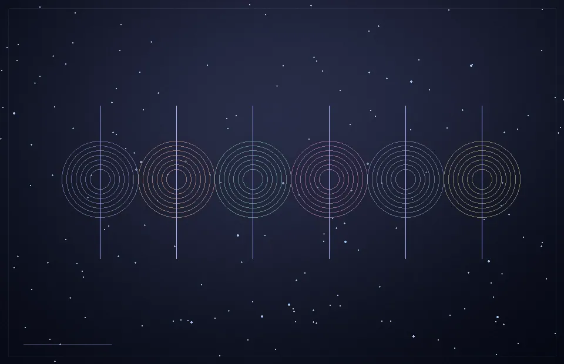
EXPEDITION / 16SIX GENERATIVE WORLDSUNWRITTEN
아직 쓰이지 않은 세계
사건의 지평선부터 형광 정원, 기억의 바다, 가능성의 도시, 프랙털, 오로라까지.
세계로 입장이 좌표에는 아직 세계가 없습니다.
다른 단어를 입력하거나 필터를 초기화해보세요.
여기서 끝내지
마세요.
다음 세계는 순서가 아니라 호기심이 결정합니다.